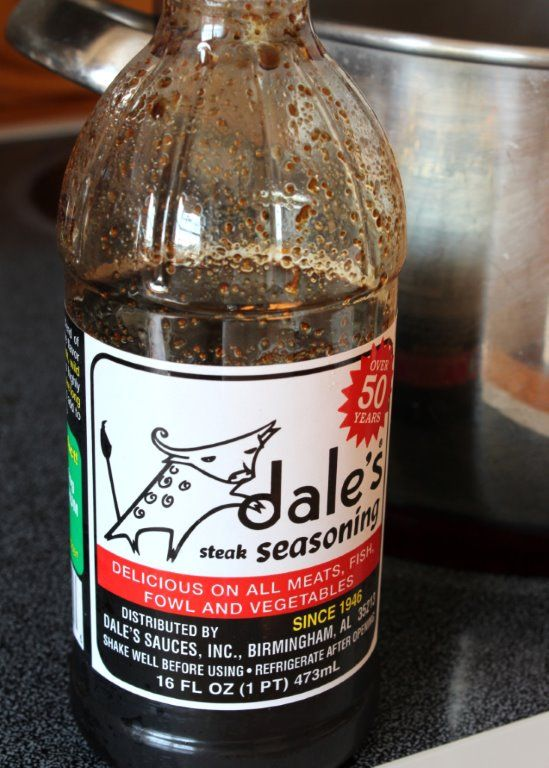

.png)
.PNG)
.PNG)
.PNG)
.PNG)
.PNG)
.JPG)
.JPG)
.PNG)
.PNG)


The last time we were together we prepared our turnip greens, made our cranberry salad, and baked our pecan pie. (Recipes here.) Â All of those could be done the day before this meal. Â Now we are ready to prepare the rest of this fall dinner, and we are going to start with the pork tenderloin.
Rinse a 2-3 lb. pork tenderloin, and pat it dry with a paper towel. Â Put 5 tablespoons of vegetable oil in a large heavy pot, and heat it on medium high. Â While the oil is heating, sprinkle a heavy coating of freshly ground pepper all over the pork tenderloin. Â Do not use any salt. Â Then put the meat in the pot with the oil, Â and brown it on all sides.
When it is thoroughly browned, pour 5 tablespoons of Dale’s steak seasoning on it; turn the heat down to low; put a lid on the pot, and let it cook slowly until its internal temperature reaches 145 degrees (although I prefer 160.)

This normally takes between 2 to 2 1/2 hours for my stove (not the normal 30 minutes per pound for roasting in the oven.) Â Rely on your meat thermometer. Â When it reaches the desired temperature, remove it from the pot; let it rest for 5-10 minutes, then slice it.

Leave the juices in the pan. Â You will use them to make gravy. Â Here are the directions in recipe format:
While the pork is cooking, make the batter for  the cornbread.  I use White Lily cornmeal mix, and simply follow the recipe on the back for the bread.
For this meal, I made it in mini-muffins, but as I mentioned last time, I think I will make it as a whole pan of cornbread the next time using my black cast iron skillet. Â The crust is crisper in the cast iron skillet. Their recipe calls for 1-2 tablespoons sugar. Â It was not sweet enough for me, so I will add more next time, but that is of course a personal preference. Â My father would tell me, “Don’t mess up the cornbread by putting sugar in it!”
This meal also included sweet potato chips. Â I don’t think you really need a recipe for these. Â All you have to do is fill a large pot with vegetable oil to a depth of about 3 inches. Â Heat on high. Â Wash and peel 4 medium sweet potatoes. Â (Long thin ones work better for chips than big ones.) Â Slice them very thin and fry in batches in the oil. Stir them occasionally to prevent sticking. Â When crisp, remove from the oil with a slotted spoon, and place on a paper towel lined platter. Sprinkle with either sugar or salt.
You will need to start preparing the grits about 5 minutes before the pork is finished. Â I use quick cook grits…they are not instant grits.
I follow the recipe on the back of the container except I change the 3 cups of water to 2 cups whipping cream + 1 cup water. Â Do not add salt. Â Bring the liquids to a boil, and slowly stir in 3/4 cup of grits. Â Reduce the heat to medium low; cover and cook for 5 minutes. Â I use a whisk to stir it frequently. Â Add 4 tablespoons butter after about 4 minutes. Â If the grits get too thick, whisk in more water or milk. (I normally have to do this.)
And here are the directions in recipe format for you:
The last thing to make is the gravy. Â Bring the juices from the pork tenderloin to a boil. Â Mix 3 tablespoons cornstarch in 1 cup water. Â When the juices begin to boil, whisk in the water+cornstarch mixture. Â Continue to whisk the liquids until they thicken. Â Remove from heat when they are of gravy consistency. Â If they thicken too much, whisk in more water a little at a time. Â (Forgive my blurry photo here. It was difficult to keep whisking the gravy and take a photo at the same time.)
The reason I have told you to omit salt from both the pork and the grits is because the Dale’s steak seasoning is salty. Â Your gravy will have enough salt flavor for the grits (assuming you are putting the gravy on the grits.) Â Nothing else needs salt when you use it. Â There is a low sodium version of Dale’s, but we find that the flavor in it is not as good as the flavor of the original.
And now the meal is prepared and it is time to eat.  Hope you are hungry. 🙂
This meal tastes like “fall” to me…if that is possible. Â And while we are on the subject of fall and food, here is a sneak peek at the upcoming fall decorating post – including another recipe… this time on the chalkboard at my kitchen desk.
So what are you cooking on this beautiful fall weekend?
We’d love to hear!


.PNG)
Kelly,
My mouth is literally watering. Your photographs are fabulous and it makes the food look so delicious. I’ve saved the recipes and will be preparing your feast within the next couple of weeks, want to join us? 😀
Karen
We went to our garden and picked the dried greens that were left on the vines, shelled them and cooked them with a ham hock, along with cornbread muffins. They were delicious! We even have a big jar full for the rest of the winter. I canned 29 quarts of the greenbeans earlier in the summer.
Love all the recipes Kelly….thanks for sharing. Marvin and I are on diets right now so we are trying to not eat.lol….That is going to be hard with the holidays coming up but we are determined.
Kelly,
This weekend I am making a huge beef roast with carrots, biscuits,and mashed potatoes with gravy. I am also trying out a new recipe for “monster” cookies that uses Halloween candy and pretzels instead of the traditional monster cookie ingredients.
Thanks for sharing your recipes with us. I can’t wait to see your Fall decorating around the house. I always love what is in your glass jars!
Yum, yum and YUM! I’ve never made these dishes like your recipes so next weekend I’m going to try!! Excited to see if I can pull it together!? This weekend end, I am into baking— getting grown children and neighbor’s goodies ready for All Hollow Eve’s day. I’m baking pumpkin brownie pound cake, popcorn balls and caramel apples. Plus, some pumpkin cookies for the cookie jar. I can not believe the COLD temps you are having in GA so early in the season! It was 52 here in Central FL– NICE!! *Had to make chipped beef gravy and homemade biscuits this morning for breakfast!!:)
Everything looks so yummy! My mouth is watering! Being a northern girl, I’ve never had greens or grits, but I might have to try them. I will have to look for Dale’s up here in Ohio.
I will try your pork tenderloin recipe, looks delish! Maybe I could find some grits somewhere in Canada!! (I do have a cast iron skillet though) The gravy looks really tasty and I that I can make for sure!!! We are having a beautiful fall day today but tomorrow we are getting the white stuff. Not sure what will be on the menu, maybe some sweet potato casserole. Thanks for sharing your fall menu and for the sneak peak of your kitchen desk. Very cozy.
Sounds easy and delicious all over again. You are a gal after my own heart. I also like sugar in the cornbread muffins except I just use Jiffy cornbread mix and add buttermilk when I have it on hand. So easy and so moist! I do need to get a cast iron skillet though. I also use cornstarch when making gravy instead of flour. Makes it so smooth. However, I use chicken broth instead of water when making the thickening for the gravy. Makes it so flavorful. Can’t wait to make the grits!
Going on a church picnic this afternoon making sure to bundle up as we live in Ohio!
Thanks again Kelly for all the wonderful recipes !
This all so good…I am going to try the whipped cream and grits. I really love your food posts. Your meals are the kind my family enjoys and I have used many of your recipes. Thanks!
Oh this all sounds sooooooooooooooooo good. I need to buy some of the Dale’s seasoning. Thanks for all the recipes. Hugs, marty